Ford Thunderbird
Eleventh generation (2002–2005) · 2001–2005
Abstract
This generation of the Ford Thunderbird is a personal luxury car, built June 2001 – July 2005 in United States: Wixom, Michigan (Wixom Assembly). Body styles: 2-door convertible. Layout: Front-engine, rear-wheel drive. Designed by Jack Telnack (1997). This generation has its own article: Ford Thunderbird (eleventh generation).
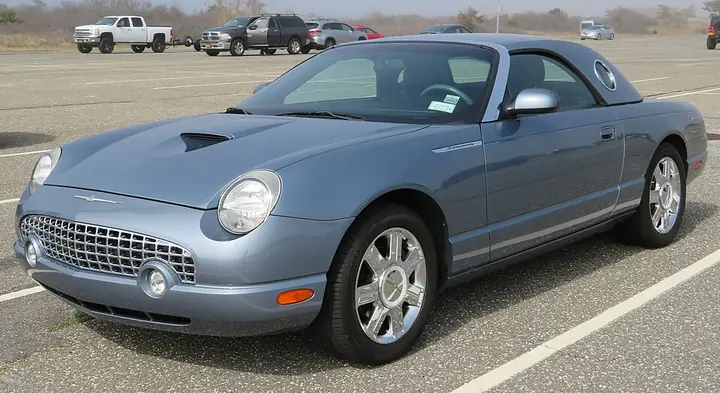

1Specifications
| Production | June 2001 – July 2005 |
|---|---|
| Model years | 2002–2005 |
| Assembly | United States: Wixom, Michigan (Wixom Assembly) |
| Designer | Jack Telnack (1997) |
| Class | Personal luxury car |
| Body style | 2-door convertible |
| Layout | Front-engine, rear-wheel drive |
| Platform | Ford DEW98 |
| Engine | 3.9 L Jaguar AJ35 V8 |
| Transmission | 5-speed Ford Bordeaux 5R44E automatic |
| Wheelbase | 107.1 in |
| Length | 186.3 in |
| Width | 72 in |
| Height | 52.1 in |
| Weight | 3775 lb |
| Predecessor | Ford Thunderbird (tenth generation) |
2Versions
- Film, television, and media
3Previous generations
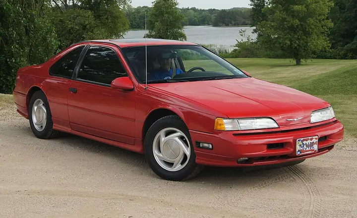
_(cropped).jpg){kind=link}
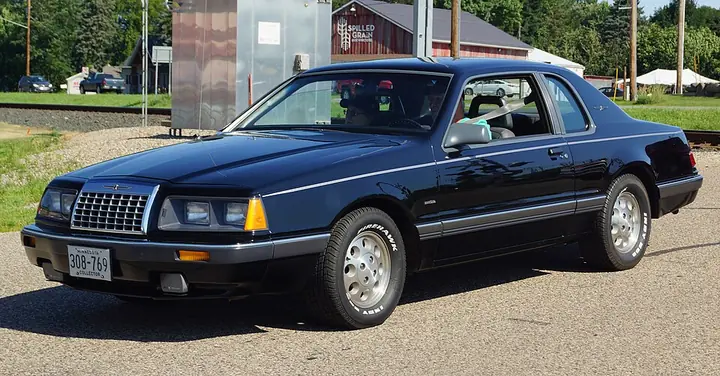
.jpg){kind=link}
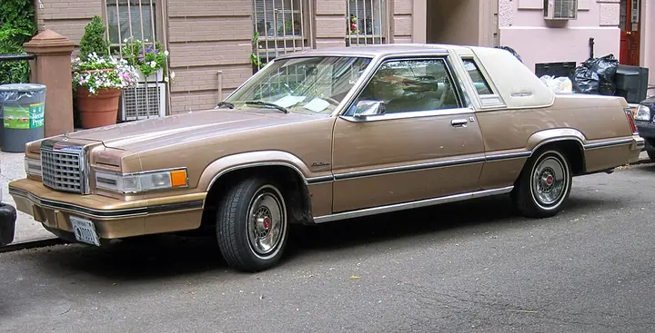

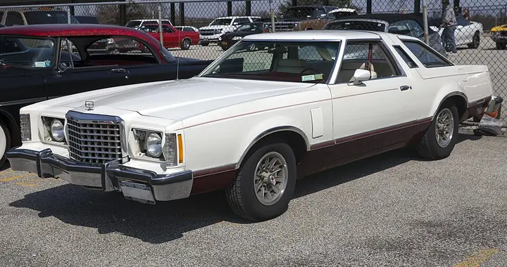

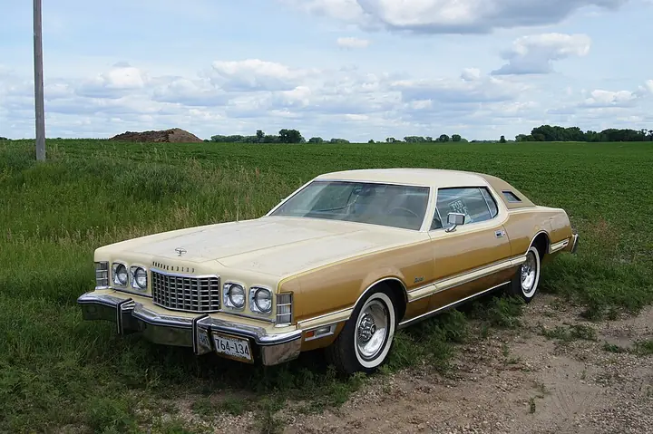
.jpg){kind=link}
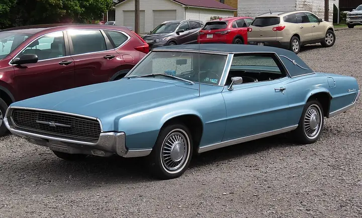
.jpg){kind=link}
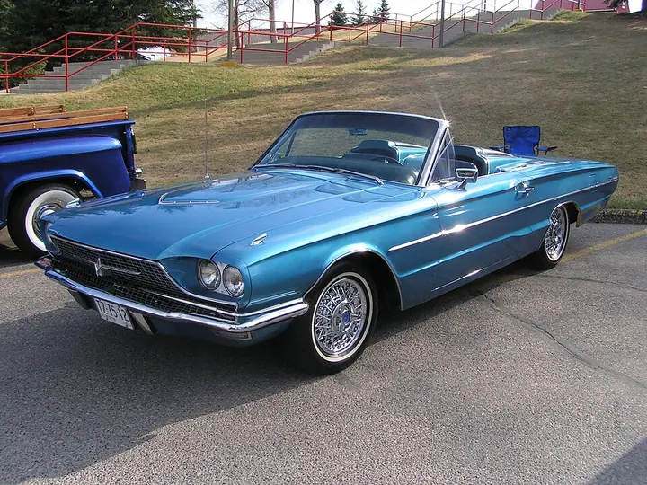
.jpg){kind=link}
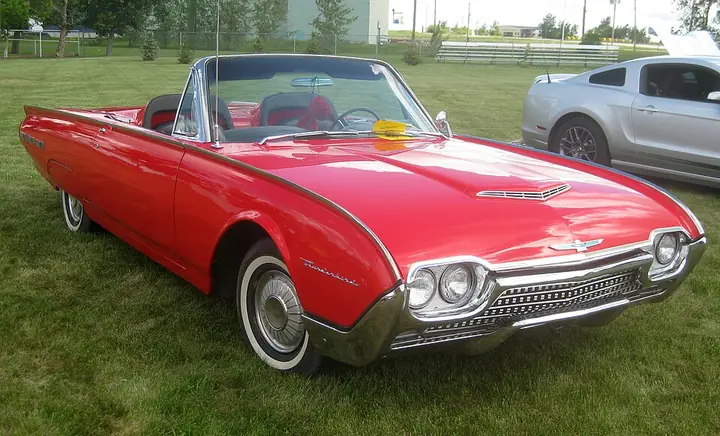
_(cropped).jpg){kind=link}
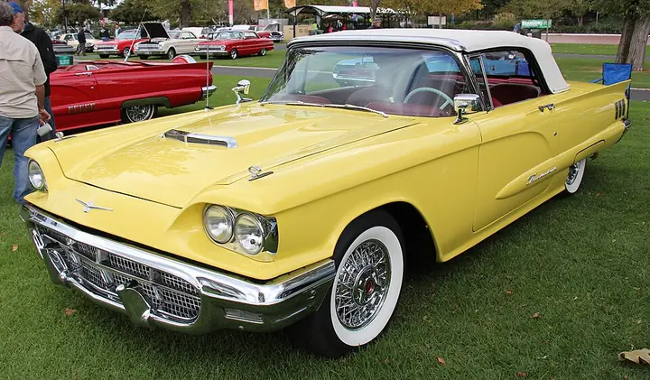
_(cropped).jpg){kind=link}
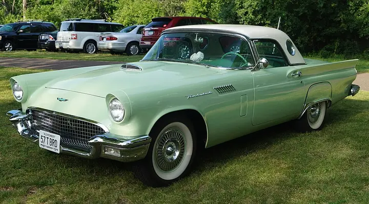
_(cropped).jpg){kind=link}
4Generation by generation
Length +6% from the first to the last
1955–1957 19544,453 mm
1958–1960 19575,217 mm
1961–1963 19605,207 mm
1967–1971 19665,255 mm
1972–1976 19725,715 mm
1977–1979 19775,530 mm
1980–1982 19795,090 mm
1983–1988 19825,019 mm
1989–1997 19885,047 mm
2002–2005 20014,732 mm
Weight −5% from the first to the last
1958–1960 19571,795 kg
1972–1976 19722,268 kg
1980–1982 19791,436 kg
1989–1997 19881,604 kg
2002–2005 20011,712 kg